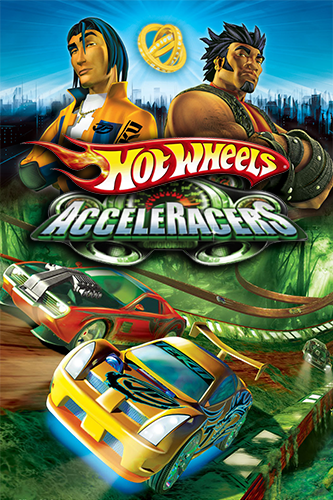
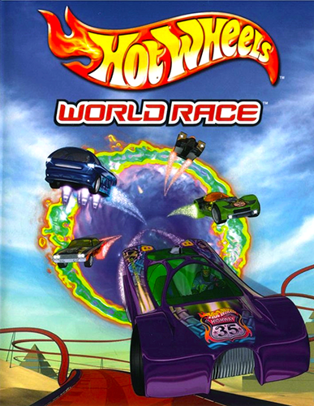

Rebaixar o carro não necessita de grandes adaptações na maioria dos casos, geralmente é facil encontrar essas peças na internet a um custo relativamente baixo, mas são necessarias adaptações/correções/Regularização deve se ir ao Detran para que eles regularizem seu carro e coloquem seus documentos. Rebaixar o carro pode ser tanto uma modificação estética quanto uma melhoria de performance, pois faz o centro de gravidade do carro ficar mais baixo gerando assim menos arrasto nas curvas fazendo o carro ficar com mais aderencia.
Preparação envolve desde hardware que são os motores compostos de pistão, biela, virabrequim, comando... entre tantas outras peças que tem que ser de qualidade e tem que ser forjadas, pois se aumentarmos muito a admissão do ar e sem mudar as coisas podemos fazer com que o pistão quebre e saia voando pelo capo... Também é preciso os controladores que atuam entre o hardware e o software, eles são centrias que permitem modificações de software que mudam o comportamentos das peças. É preciso legalizar pois muitos carros são transformados de carros convencionais a carros turbo e precisam ir ao Detran para regularizar, mas se o carro já for turbo de fabrica isso não se aplica!
As costumizções inglobam o que foi falado acima, mas elas são muito mais extensas do que somento o que foi mencionado pois, podemos modificar de teto a pneus, de interior a exterior, praticamente tudo num carro pode ser customizado, desde os fios até a lataria que pode mudar de cor, aspecto, toque... Tudo depende do valor e do gosto do dono do carro, geralmente as customizações mais comuns são as de troca de cor, troca de rodas, troca de cor do interior, troca de pneus para mais esportivos, troca de farois, geralmente as pessoas fazem tanto por estética quanto por performance num carro pois podem alargar os carros e deixa-los mais chamativos, obviamente que muitas dessas modificações tem de ser regularizadas e outras que não podem ser regulatizadas.
|  |  | |
|
|---|---|---|---|